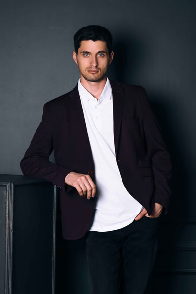

Henrik Krag Nielsen

Nicklas Dyrelund Christensen

Maria Christensen

Niels Stenslund Bjerg
Helle Friis Bach
Signe Bruun
Vær med på vores mailingliste og modtag nyheder om de bedste steder, trends og opdateringer.
Peter Gade
De nyere lokalbusser har kørestolsramper, enten manuelle eller automatiske. I de større byer har busserne lave gulve samt knapper, der kan holde dørene åbne indtil alle er kommet ind eller ud.
Sophia Hansen
Hvis brusesædet fx er på et handicapegnet værelse, er det en god ide, at det kan justeres i højde. Til hoteller anbefales, at et brusesæde kan klare en vægt på 150 kg.
Stine Jensen
I alle vandretursfoldere, der er blevet udgivet siden ca. 2000 har vi vurderet handicapvenligheden - primært tilgængeligheden med kørestol - for området.
Henrik Krag Nielsen
Nicklas Dyrelund Christensen
Maria Christensen
Niels Stenslund Bjerg
Helle Friis Bach
Signe Bruun